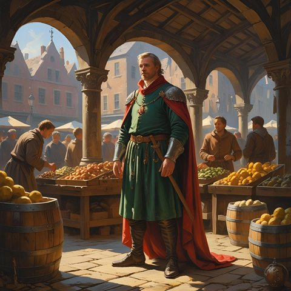

Ebles Warnachaire, prévôt des marchands

- Prévôt des marchands et bourgmestre de Bourg-Preux. L'un des sept échevins de la Maison Forte.
- Le plus puissant des trois changeurs de la rue de la Monnaie. Sa maison de change est au coin de la rue de la Bataille et de la rue de la Monnaie. Il ne reçoit que les clients importants.
- Son beau-frère, Paterne Flochet, gère les affaires courantes de la banque.
- Les marchands ciudaliens changent chez lui leur monnaie contre des florins. Les attaques contre leurs caravanes nuisent à ses affaires.
- Il s'entend très bien avec le centenier Fradmar.
- Dans « La gloire de la République », il soutient les mesures dures pour calmer le baron de Kaerlund et la famille Rapazzoni.